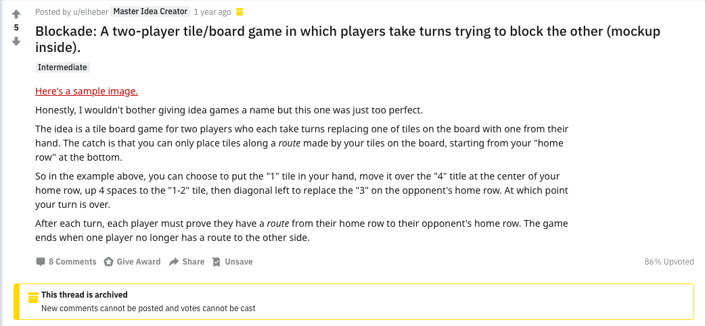

Rapport de développement de projet final - ISN 2019
Crédits
Développeur : NGUYEN Anthony
Designer : u/elheber
Préambule
Blockade est un prototype conçu pour le projet d'ISN de fin d'année 2019.
Toute la progression du jeu peut être suivie dans "Commits".
Le jeu et le code sont entièrement en anglais afin de respecter un assignement constant des variables.
Environnement : Ce jeu a été crée sous macOS Mojave(10.14.4 (18E226)),
il est probable que des bugs soient présents sous Windows.
L'environnement de développement "PyCharm" a été utilisé pendant ce projet.
Note : Les librairies utilisées sont STANDARD et INCLUSES avec Python 3.x+ à l'exception de Pygame. (voir Python Standard Library)
Nécéssaire:
Global:
- Python 3.0+
- Pygame
- sys
- os
- webbrowser
- random
- numpy
Serveur:
- socket
- thread
- pickle
Contenu
- /server.py | Programme à exécuter : lance le serveur
- /main.py | Programme à exécuter : lance le jeu
- /network.py | Permet la liaison entre le serveur et le client
- /Assets | Dossier contenant les cartes pour les joueurs bleu et rouge.
- /Other_assets | Dossier contenant les cartes de dos
- /base.py | Exécute le main loop pygame
- /config.py | Contient les paramètres globaux
- /logic.py | Créer un objet "board" avec des objets "cards" choisis aléatoirement
Règles du jeu et fonctionnement
Règles du jeu
L'objectif du jeu est d'établir une "route" de votre camp au camp adverse. A chaque tour, le nombre de routes que vous avez établi est rajouté au score. Afin d'établir une route, vous devez utiliser les cartes sur le plateau en partant de votre camp jusqu'au camp adverse.
Fonctionnement
Les cartes sont composées de flèches qui indiquent la direction dans laquelle le chemin peut être crée ainsi qu'un nombre qui indique la distance à laquelle le chemin peut aller.
Dans cet exemple, la carte qui est tout à gauche peut accéder à la case qui est tout à droite car elle à une distance de 2 et elle a une flèche qui va à droite. Par contre, elle ne peut pas accéder à la case juste à côté avec le symbole infini car elle est à une distance de 1.
Il existe des cases spéciales, comme les cases infini et les cases 1-2 et 1-3. Les cases 1-2 et 1-3 ont comme leur nombre l'indique, une distance qui va de 1 à x. Dans l'exemple en dessous, la carte du bas peut accéder aux deux cartes du haut car elle possède une distance de 1 et de 2 ainsi que d'une direction qui va vers le haut.
En pratique, il suffit de cliquer sur une première carte dans votre camp puis de cliquer sur une deuxième carte qui est accessible, et ainsi de suite pour pouvoir établir une route. Si il n'est pas possible de construire, cliquez autre part ou bien l'algorithme va automatiquement rejetter la construction si il n'y a pas de case accessible ou si la carte sur laquelle vous avez cliqué est invalide (par exemple cliquer sur une carte ennemie). Vous pouvez voir ici qu'un chemin à été établi en passant par la flêche jaune.
Cahier des charges
Fonctionnalitées implémentées
Algorithmie/logique
- Création de cartes sous la forme d'objets dont les paramètres sont tirés selon des probabilités grâce à numpy
- Gestion de l'ajout d'une carte partant de la main du joueur au plateau
- Ajout d'une carte dans la main du joueur lorsqu'une carte est posée sur le plateau
- Création d'un algorithme de reconnaissance du chemin à un premier degré
Interface utilisateur
- Ajout de score basé sur le nombre de routes établies
- Les cartes dans la main de l'adversaire sont cachées
- Affichage d'informations informant sur le statut du jeu en cours
- Ajout d'un bouton "Tutoriel" qui renvoie vers le reposit github
Réseau
- Création d'un réseau avec un serveur et deux clients
- Gestion du plateau par le serveur
- Fonction de "Reset" qui permet de créer une nouvelle partie sans relancer le serveur
- Rotation de 180° pour le joueur 2 de son plateau afin d'assurer un affichage identique
Fonctionnalitées à rajouter
Algorithmie/logique
- Ajout d'une intelligence artificielle aidée par le module de reconnaissance du chemin à prendre mais à plusieurs degrés
- Ajuster les probabilités pour équilibrer le gameplay
- Ajouter un timer identique aux échecs
Interface utilisateur
- Ajouter une animation lorsque la souris passe au dessus d'une carte
- Afficher les routes construises
- Ajouter une animation lorsqu'une route est brisée
- Ajouter une animation où une flèche suit la création de route (cf dernier exmple)
- Ajouter un menu
Réseau
- Gérer automatiquement la création de lobby
Architecture logicielle
Importation
Diagramme 1: Visualisation des importations de libraries et de fichiers python.
On démarre le client en créant une instance de Game() et en appelant la méthode main() de l'instance stockée dans la variable "g".
Initialisation
if __name__ == "__main__":
g = Game()
g.main()
La classe Game est une subclass de Base: Game a donc accès à toutes les méthodes et attributs de la classe parente, Base.
class Game(Base)
On commence donc par initialliser la classe Base
Base.__init__(self, config.SCREEN_TITLE, config.SCREEN_WIDTH, config.SCREEN_HEIGHT, config.FRAMERATE, config.SCREEN_FULLSCREEN)
On va chercher dans le fichier "config" les paramètres requis pour initialiser Base, ici, ce principalement des variables liés aux dimensions.
SCREEN_WIDTH = 1024
SCREEN_HEIGHT = 800
[...]
SCREEN_TITLE = "Blockade"
SCREEN_FULLSCREEN = False
[...]
FRAMERATE = 15
Threads & Sockets
Avant de charger nos fichiers, nous allons établir la connection entre le client et le serveur. On utilise des sockets et threads pour établir la connection : une classe Network sert d'interface entre le client et le serveur, c'est le thread. Il y a ainsi trois types de données qui seront communiquées entre le serveur et le client :
- Objet Config
L'interaction principale entre le serveur et le client est l'échange d'objets Config, chaque object contient les informations nécéssaires à l'affichage des cartes.
class Config: def __init__(self, PLAYER, BOARD, TURN, REDSCORE, BLUESCORE): self.PLAYER = PLAYER self.BOARD = BOARD self.TURN = TURN self.REDSCORE = REDSCORE self.BLUESCORE = BLUESCOREConfig est appelé lors de la première initialisation du serveur.
players = [Config("P1", board, random_player, 0, 0), Config("P2", board, random_player, 0, 0)]Le serveur va recevoir les données du joueur 1 et va renvoyer à ce joueur les données de l'autre joueur pour qu'il puisse mettre son board à jour.
def send(self, data): try: self.client.sendall(pickle.dumps(data)) # Send an object to the server return pickle.loads(self.client.recv(2048*30)) # Receive back what the server sent except socket.error as e: print(e) [...] if player == 1: # Les données sont reçues par le joueur 1 players[0].TURN = players[1].TURN # Update du tour du joueur 0 players[0].BOARD = players[1].BOARD # Update du board du joueur 0 reply = players[0] elif player == 0: players[1].TURN = players[0].TURN players[1].BOARD = players[0].BOARD reply = players[1] [...] def getP(self): return self.p - Objet AskBoard
AskBoard va envoyer une classe vide au serveur. Le serveur va alors vérifier le nom de la classe et renvoyer au client son propre objet Config.
elif data.__class__.__name__ == "AskBoard": if player == 1: reply = players[1] # Donner au client son board mis à jour elif player == 0: reply = players[0] print("Mise à jour du board...") print("- Reçu: ", data) print("- Envoi : ", reply) conn.sendall(pickle.dumps(reply))
- Objet ResetBoard
ResetBoard fonctionne de la même manière que AskBoard, sauf que le serveur va tout réinitialliser et renvoyer au client sa nouvelle config.
# On reçoit une classe qui à le nom ResetBoard, on réinitiallise tout elif data.__class__.__name__ == "ResetBoard": new_board = Board() # Créer une nouvelle instance de board new_random = random.choice(player_list) # Choisir aléatoirement un nouveau joueur # Créer de nouvelles config new_players = [Config("P1", new_board, new_random, 0, 0), Config("P2", new_board, new_random, 0, 0)] board = new_board players[0] = new_players[0] players[1] = new_players[1] if player == 1: reply = players[1] # Give the client his updated board elif player == 0: reply = players[0] print("Reset de la partie...") print("- Reçu: ", data) print("- Envoi : ", reply) conn.sendall(pickle.dumps(reply))
Client
Une fois qu'une instance "Base" est initialisée, on va charger les fichiers image pour que Pygame puisse plus tard les afficher. Cet algorithme va tout d'abord filtrer les fichiers indésirables qui se seraient par hasard retrouvés dans "Assets". Ensuite, une boucle for va itérer dans une liste les chemins vers chaque image et refiltrer ces données brutes pour qu'elles puissent être utilisées plus tard dans l'algorithme de distribution aléatoire. Ces données sont pour le moment stockées dans un dictionnaire en tant que "id", ce dictionnaire est ensuite lui-même ajouté à une liste.
self.DIRECTIONS_FILES = ("1.png", "1-2.png", "1-3.png", "2.png", "3.png", "4.png", "inf.png")
[...]
def load_folders(self, images=False, sounds=False, music=False):
""" Load every assets."""
if images:
# Adjust the number of files in "Assets" dir.
for side in self.player:
for r, d, directory in os.walk("Assets/{} Tiles".format(side)):
for file in directory: # Analyze every "file" name in the directory
if file not in self.DIRECTIONS_FILES:
directory.remove(file) # Remove any parasite
for file in directory:
self.ASSETS_PATH.append(str(r + "/" + file)) # Append the path to the file to a list.
# Transform 'Assets/Blue Tiles/L-T-R-B/1x/inf.png' into 'Blue Tiles/L-T-R-B/inf'
for asset in self.ASSETS_PATH:
directory, side, direction, dump, number_file = asset.split("/")
number, extention = number_file.split(".")
filter_side, word_tiles = side.split(" ")
readable = "{}/{}/{}".format(filter_side, direction, number)
self.ASSETS_ACCESS.append(readable)
# Load every images with independent readable variables from ASSETS_ACCESS
for x in range(len(self.ASSETS_ACCESS)):
current_access = self.ASSETS_ACCESS[x] # Readable path as variable
current_access = pygame.transform.scale(pygame.image.load(self.ASSETS_PATH[x]), (config.TILE_HEIGHT, config.TILE_WIDTH)) # Open images with previous variable as argument
img_dict = {
'id': self.ASSETS_ACCESS[x],
'img': current_access
}
self.ASSETS_IDnPATH.append(img_dict)
if sounds:
self.sounds = {str(i)[:-4]: pygame.mixer.Sound("sounds/" + i) for i in os.listdir("sounds") if
os.path.isfile("sounds/" + i)}
if music:
self.music = {str(i)[:-4]: "music/" + i for i in os.listdir("music") if os.path.isfile("music/" + i)}
Diagramme 2: Fonctionnement de la fonction load_folders()
Une fois que les images sont chargées, on va déterminer si le client est le deuxième jour ou non. Si le client est effectivement le deuxième joueur, la zone de jeu va effecture une rotation de 180° et va itérer ses boucles for d'affichage en partant de la dernière colonne et ligne jusqu'à la première.
On effectue ces changements pour que le client aie toujours son côté en bas de l'écran.
def reverse_playingboard(self):
"""This function takes the playing board and reverse its x and y axis"""
xrow = 0
for row in range(len(self.game_board.playing_grid) -1, -1, -1):
for col in range(len(self.game_board.playing_grid[row]) -1, -1, -1):
standard_dict = self.game_board.playing_grid[row][col]
self.reversed_playingboard[xrow].append(standard_dict)
xrow += 1
self.game_board.playing_grid = self.reversed_playingboard
self.reversed_playingboard = [[],[],[],[],[],[]]
Mécanisme de jeu
Cette partie du code nous permet de déterminer le chemin qu'une carte peut prendre. Cependant, il s'agit d'un algorithme qui ne trouve le chemin qu'au premier degré, c'est à dire qu'il ne peut pas trouver un chemin qui va de la zone du joueur à la zone adverse. Seul le chemin qu'une seule carte peut emprunter est déterminable.
def trace(self):
"""Find out the available path of each card"""
for row in range(len(self.game_board.playing_grid)):
for col in range(len(self.game_board.playing_grid[row])):
self.card = self.game_board.playing_grid[row][col]['card']
self.tosp = self.card.direction # Split the str directions of the card
self.split_directions = self.tosp.split("-") # create a list, split by "-"
if p.PLAYER == "P1":
self.side = "Red"
self.enemy_side = "Blue"
elif p.PLAYER == "P2":
self.side = "Blue"
self.enemy_side = "Red"
for ind_direct in self.split_directions: # iterate through the created list
for a_dict in self.coordinates: # iterate through coordinates default list
if ind_direct == a_dict['id']:
x, y = a_dict['xy']
if self.card.number == "inf":
for number in range(1, 5):
coords_nb = self.calculate_coords(x, y, number)
if coords_nb == (0, 0):
pass
else:
self.check_ifin_board(coords_nb, col, row)
elif self.card.number == "1-2":
for number in range(2):
coords_nb = self.calculate_coords(x, y, number)
if coords_nb == (0, 0):
pass
else:
self.check_ifin_board(coords_nb, col, row)
elif self.card.number == "1-3":
for number in range(3):
coords_nb = self.calculate_coords(x, y, number)
if coords_nb == (0, 0):
pass
else:
self.check_ifin_board(coords_nb, col, row)
else:
coords_nb = self.calculate_coords(x, y, self.card.number)
self.check_ifin_board(coords_nb, col, row)
Dans cette fonction "trace" qui est la fonction principale de notre algorithme de recherche, chaque carte sur le plateau de jeu est analysé par deux boucle for. On extrait la direction de l'objet carte qui est sous forme de str.
self.directions = ("DtL-DtR", "DtL-DtR-DbR-DbL", "DtL-T-DtR", "DtL-T-DtR-R-DbR-B-DbL-L",
"L-R", "L-T-R", "L-T-R-B", "R-DbR-B-DbL-L", "T", "T-B")
Ce str va ensuite être séparé à chaque "-" et transformé en une liste pour donner au final par exemple:
['DtL', 'DtR', 'DbR', 'DbL']
Une fois qu'on a cette liste avec toutes les directions isolées, on va associer chaque direction individuelle (symbolisée par une flèche dans le jeu) par une liste de coordonnées :
self.coordinates = ({"id": "DtL", "xy": (-1, -1)}, {"id": "DbL", "xy": (-1, 1)}, {"id": "DtR", "xy": (1, -1)},
{"id": "DbR", "xy": (1, 1)}, {"id": "T", "xy": (0, -1)}, {"id": "R", "xy": (1, 0)},
{"id": "B", "xy": (0, 1)}, {"id": "L", "xy": (-1, 0)})
On peut ainsi relever le déplacement x et y de la direction individuelle (attention, le déplacement n'est pas sur un axe x et y classique mais est positionné sur une grille à la manière des deux boucles for indentées qui accèdent à game_board avec des lignes et colonnes. Une fois les coordonées xy relevées, on peut alors appeler une fonction qui va multiplier le nombre de portée de la carte avec les coordonnées xy.
def calculate_coords(self, x, y, number):
"""Take the template coordinates and multiple it by the assigned number of the card."""
x_calc = int(x) * int(number)
y_calc = int(y) * int(number)
coords_nb = (x_calc, y_calc)
return coords_nb
On dira que la carte qui est cherchée par l'algorithme est la carte "cible" et que la carte qui a été cliquée (la source) est la carte "tireuse". Il suffit alors d'ajouter la carte cible à une liste, cependant il faut prendre en compte la position de la carte tireuse. Pour cela, on redéfinit les coordonnées x et y de la carte cible en rajoutant a x le nombre de colonnes de la carte tireuse et a y le nombre de lignes pour atteindre la position de la carte tireuse. Ainsi, on définit de nouvelles coordonnées qui sont ajustées à la position de la carte tireuse. On rajoute une condition pour que si la carte cible est en dehors de la zone de jeu, alors elle n'est pas prise en compte
def check_ifin_board(self, coords_nb, col, row):
"""Set x and y position of the target card based on adjusted coordinates and col/row position of shooter card"""
if coords_nb[0] == 0:
new_pos_x = col
new_pos_y = coords_nb[1] + row
elif coords_nb[1] == 0:
new_pos_x = coords_nb[0] + col
new_pos_y = row
else:
new_pos_x = coords_nb[0] + col
new_pos_y = coords_nb[1] + row
if 0 <= new_pos_x <= 4 and 0 <= new_pos_y <= 5:
try:
if self.card.side == self.side and self.game_board.playing_grid[new_pos_y][new_pos_x]['card'].side == self.side:
self.card.targets.append(self.game_board.playing_grid[new_pos_y][new_pos_x]['card'])
except:
pass
Historique du projet
Il y a deux mois, j'ai commencé le projet "Blockade" que j'avais trouvé à partir du subreddit r/gameideas où des gens proposent leurs idées de jeu à développer. Je suis tombé sur le concept de jeu Blockade que j'ai aimé pour son originalité. 
J'ai ensuite pu avoir l'opportunité de collaborer avec u/elheber, designer, qui m'a fourni les assets
nécéssaires au développement du jeu et a répondu a mes questions.


Les problèmes
J'ai eu plusieurs problèmes lors du codage de ce projet.
Tout d'abord, j'ai du apprendre à implémenter un modèle client-serveur sous python avec l'aide de threads et de
sockets. Il m'a fallut du temps pour comprendre comment la connection entre le serveur et le client était
constamment en train échanger des données.
J'ai également eu certains problèmes lorsque j'ai voulu transferer
des données au départ. En effet, j'ai tout d'abord essayé de transférer des données en format "str", mais
il s'est avéré qu'utiliser seulement des données "str" limitait le nombre de données que je pouvais envoyer à
chaque transfert : pour faire court, repasser tous mes attributs d'objets en str puis les envoyer puis ensuite
les réintégrer dans des objets était beaucoup trop fastidieux.
Au lieu de ça, j'ai utilisé la librairie pickle qui permet de mettre des objets dans des containers pickle
et de les envoyer directement : c'est une solution qui est beaucoup plus simple ! En revanche, les packets
envoyés sont beaucoup plus gros : ce n'est pas un problème puisque mon jeu n'a pas besoin de transfert de
données rapides comme un MMO en aurait besoin.
Mon deuxième problème concernait la fonction calculate_coords qui permet d'ajuster les cartes sur lesquels un
chemin peut être établi. Le soucis est que j'ai essayé d'intégrer une méthode mathématique non adaptée
à mon algorithme. J'ai tout d'abord raisonnée avec un axe x et y classique tel qu'on me l'a appris depuis
le collège. Sauf que dans mon algorithme, je raisonne en row et col, par conséquent certaines coordonnées sont
éronnées. Voilà un exemple simple la direction "bas(Bottom)" a sur un axe classique la coordonnée x = 0
et y = -1, cependant, dans un raisonnement en ligne et colonne, les
coordonnées sont x= 0 et y = 1 !
Tout simplement car pour aller en bas, la colonne passe de 0 à 1, il n'existe pas de colonne égale à -1.
C'est un bug très bête mais m'a coûté quelques heures.
Mon dernier problème était sur la gestion de l'interface : pour pouvoir afficher les deux joueurs en bas,
il m'a fallut me creuser les méninges pour comprendre comment faire afficher le même tableau de jeu(game_board) mais dans un sens différent.
Je me suis alors posé plusieurs questions : dois-je créer un autre tableau de jeu qui serait une copie du tableau original
mais itérer dans le sens inverse ? Comment cela rendrait-il au niveau du serveur ? Car il faut envoyer une copie du game_board à
chaque joueur, mais il faut que tout soit dans le bon sens...
Au final j'ai adapté pour une solution bien plus simple, c'est à dire de faire en sorte que si le client est identifié
comme le deuxième joueur, alors lors de l'affichage python la zone de jeu itérée dans le sens inverse.
Bugs
- Il est possible que le client ne se lance pas et affiche l'erreur suivante :
Ce bug est dû au fait que le client n'a pas réussi à ce connecter au serveur : donc soit le serveur n'est pas ouvert, soit le serveur est ouvert mais le client n'a tout de même pas pu se connecter. Dans le deuxième cas, je n'ai pas trouvé de fix, cependant il suffit de patienter un peu et de relancer le serveur et le client. Si rien n'y change, changez le port du serveur et du client. - Si vous tentez de créer une route en passant deux fois par votre camp, l'algorithme va rejeter la route. Ceci n'est pas un bug mais une fonctionnalité qui a été laissée exprès pour éviter de créer des chemins redondants.
- Lorsque vous cliquez sur "Tutoriel", le lien est ouvert plusieurs fois. Cela est du au fait que le jeu tourne à 15fps, par conséquent la fonction est appelée plusieurs fois.